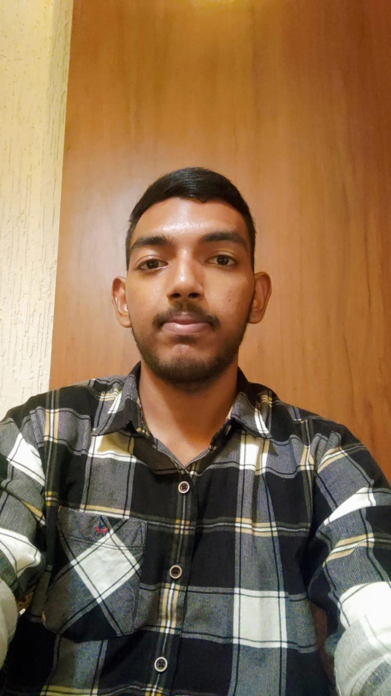

2024 — 2028
NIST, Odisha — B.Tech CSE
Computer Science & Engineering • CGPA 9.2 / 10
I'm Maruti Nandan Dash, a B.Tech Computer Science & Engineering student and software developer aspirant exploring software development, engineering and IoT.

I am a B.Tech Computer Science and Engineering student at NIST, Odisha, with a 9.2/10 CGPA. I have practical experience in IoT project development, coding, testing and debugging, alongside knowledge of programming, databases and web technologies.
I enjoy learning by building — from an IoT smart dustbin to a campus-services chatbot — and I'm interested in growing as a Software Developer / Software Engineer.
Hands-on work that combines problem solving with practical implementation.
Developed an automatic smart dustbin using an ultrasonic sensor and servo motor. Implemented automatic lid operation when a hand is placed near the sensor and worked on coding and testing.
Designed a chatbot to provide students with quick information about campus services, organizing service information and responding to common student queries.
Computer Science & Engineering • CGPA 9.2 / 10
IoT Project Trainee • Arduino programming, sensor integration, servo motor control, testing and debugging.
85%
83.60%
Software Development • Software Engineering • IoT